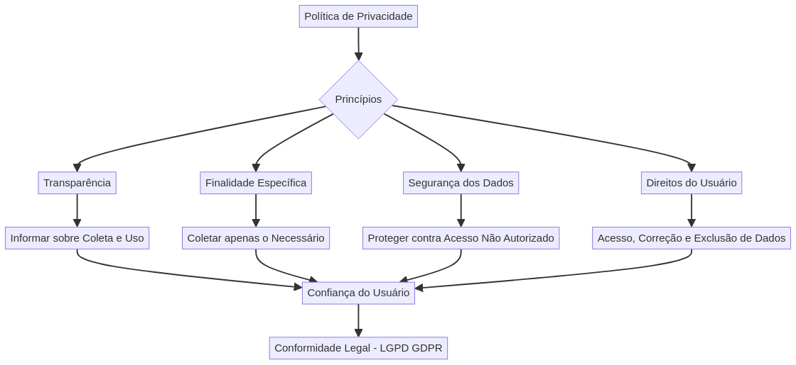
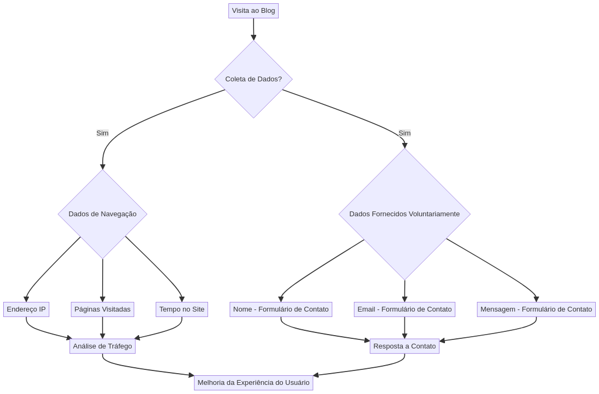

Nossa Política de Privacidade
A sua privacidade é importante para nós. Esta política explica como coletamos, usamos, divulgamos e protegemos suas informações pessoais.

Dados Coletados

Para o público cliente, detalhamos abaixo os tipos de dados que coletamos e como eles são aplicados para melhorar nossos serviços e a sua experiência.
Como Utilizamos Seus Dados (Explicação Técnica para Clientes)
Explicação Técnica sobre Coleta e Aplicação de Dados
Prezados clientes,
Nossa plataforma se dedica a oferecer uma experiência rica e personalizada, e para isso, a coleta e o tratamento de dados são processos essenciais, realizados com a máxima transparência e em conformidade com as leis de proteção de dados, como a Lei Geral de Proteção de Dados (LGPD) no Brasil e o Regulamento Geral sobre a Proteção de Dados (GDPR) na União Europeia.
1. Tipos de Dados Coletados
Coletamos dados de duas categorias principais para garantir o funcionamento e a melhoria contínua dos nossos serviços:
1.1. Dados de Navegação (Coleta Automática)
São dados coletados automaticamente quando você interage com nosso blog. Estes incluem:
- Endereço IP: Utilizado para identificar a origem geográfica aproximada do acesso, auxiliar na detecção de atividades suspeitas e para fins de análise de tráfego regional.
- Páginas Visitadas: Registramos quais páginas você acessa, a ordem e o tempo de permanência. Isso nos ajuda a entender o interesse do usuário pelo conteúdo e a otimizar a estrutura do site.
- Tempo no Site: Medimos a duração da sua visita para avaliar o engajamento com o conteúdo e a usabilidade da plataforma.
- Dados do Dispositivo: Informações sobre o tipo de dispositivo (desktop, mobile), sistema operacional, navegador utilizado e resolução de tela. Essencial para garantir a compatibilidade e a otimização da visualização do conteúdo em diferentes ambientes.
- Cookies e Tecnologias Similares: Pequenos arquivos de texto armazenados em seu dispositivo que permitem reconhecer seu navegador e lembrar suas preferências (ex: idioma, login, itens de carrinho) ou para fins de análise e publicidade. Utilizamos cookies próprios e de terceiros (ex: Google Analytics) para entender o comportamento do usuário e personalizar a experiência.
1.2. Dados Fornecidos Voluntariamente (Coleta Direta)
São dados que você nos fornece ativamente, geralmente através de formulários ou interações diretas:
- Nome Completo: Coletado em formulários de contato ou comentários para identificação e personalização da comunicação.
- Endereço de E-mail: Utilizado para responder a suas perguntas, enviar newsletters (com seu consentimento explícito) ou notificações relevantes.
- Mensagem/Conteúdo do Contato: As informações que você nos envia através do formulário de contato, permitindo-nos compreender suas necessidades e fornecer o suporte adequado.
2. Finalidade e Aplicação dos Dados
Os dados coletados são empregados com finalidades específicas e legítimas, sempre visando aprimorar sua experiência e a qualidade dos nossos serviços:
- Melhoria da Experiência do Usuário: Analisamos os dados de navegação para identificar padrões de uso, páginas populares e pontos de fricção, permitindo-nos otimizar o design, a navegação e o conteúdo do blog.
- Personalização de Conteúdo: Com base em seus interesses e histórico de navegação, podemos sugerir artigos, hobbies ou entretenimentos que sejam mais relevantes para você.
- Comunicação Efetiva: Utilizamos seu nome e e-mail para responder a suas solicitações de contato de forma personalizada e para enviar comunicações que você tenha optado por receber.
- Análise de Desempenho e Marketing: Dados anonimizados e agregados são usados para entender o desempenho do blog, a eficácia de campanhas de marketing e para identificar oportunidades de crescimento.
- Segurança da Informação: O endereço IP e outros dados de navegação são cruciais para monitorar e prevenir atividades fraudulentas, ataques cibernéticos e garantir a integridade da nossa plataforma.
- Conformidade Legal: Manter registros de consentimentos e atividades para demonstrar conformidade com as regulamentações de proteção de dados.
3. Métodos de Coleta
Além dos formulários de contato, a coleta de dados de navegação é realizada principalmente através de:
- Cookies: Pequenos arquivos que armazenam informações no seu navegador. Você pode gerenciar as configurações de cookies diretamente no seu navegador.
- Web Beacons/Pixels: Pequenas imagens invisíveis que nos ajudam a rastrear a atividade do usuário em páginas web e e-mails.
- Logs de Servidor: Registros automáticos gerados pelos nossos servidores que contêm informações sobre o acesso ao site.
4. Segurança e Armazenamento dos Dados
Empregamos medidas de segurança técnicas e organizacionais robustas para proteger seus dados contra acesso não autorizado, alteração, divulgação ou destruição. Isso inclui criptografia, firewalls, controles de acesso e monitoramento contínuo. Seus dados são armazenados em servidores seguros, localizados em data centers com certificações de segurança reconhecidas internacionalmente.
O tempo de retenção dos dados varia conforme a finalidade da coleta e as exigências legais. Dados de navegação são geralmente retidos por períodos mais curtos para análise estatística, enquanto dados fornecidos em formulários podem ser mantidos enquanto houver uma relação ativa ou necessidade legal.
5. Direitos do Titular dos Dados
Em conformidade com a LGPD e o GDPR, você possui os seguintes direitos em relação aos seus dados pessoais:
- Direito de Acesso: Solicitar acesso aos seus dados que mantemos.
- Direito de Retificação: Solicitar a correção de dados incompletos, inexatos ou desatualizados.
- Direito de Exclusão (Direito ao Esquecimento): Solicitar a eliminação de seus dados, salvo exceções legais.
- Direito à Limitação do Tratamento: Solicitar a restrição do tratamento de seus dados em certas circunstâncias.
- Direito à Portabilidade: Receber seus dados em um formato estruturado e de uso comum.
- Direito de Oposição: Opor-se ao tratamento de seus dados em determinadas situações.
- Direito de Revogar o Consentimento: Retirar seu consentimento a qualquer momento, sem afetar a legalidade do tratamento realizado antes da revogação.
Para exercer qualquer um desses direitos, por favor, entre em contato conosco através do nosso formulário de contato ou pelo e-mail bielaraujo878@gmail.com.
Estamos à disposição para quaisquer dúvidas e para garantir que sua experiência em nosso blog seja segura, transparente e agradável.
Atenciosamente,
A Equipe do Blog de Curiosidades, Hobbies e Entretenimento